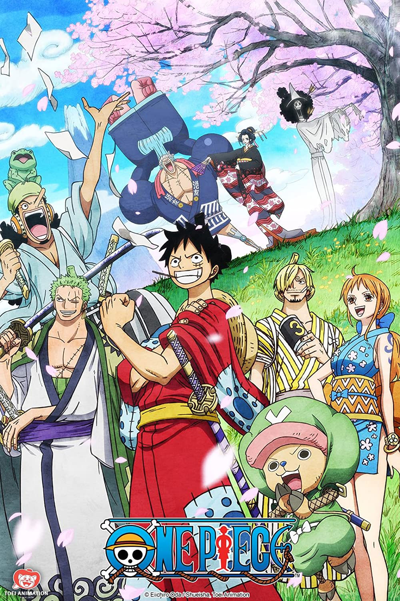

One Piece
 One Piece is a story about pirates following the main character Monkey D. Luffy and his crew. And they go through many adventures like fighting fishmen or sailing on the clouds. And every pirate is trying to search for one treasure left by Gol D. Rodger. The One Piece.
The Crew. In one piece there are thousands probly even millions of different pirate crews trying to get to the one piece. The Crew we follow are a group called the straw hat pirates. their captain Monkey D. Luffy, Swords man (first mate) Roronoa Zoro, Chef Sanji, Navigator Nami, Sniper Usopp, Doctor Tony Tony Chopper, Archeologist Nico Robin, Shipwright Franky, Musician Brook, Helmsman Jinbe.